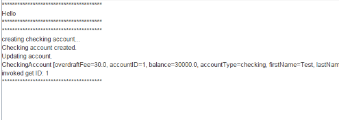
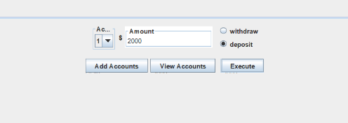
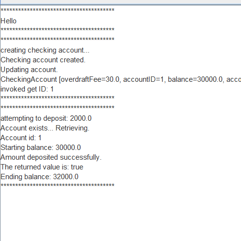
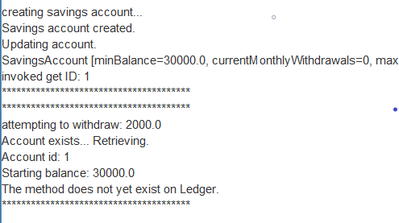

Once the application is running, you will see the interface below.
To begin, click "Create account," and create a checking account.
You should see a printout of the contents of the new account.
Next, to make a deposit, select the radio button adjacent to "Deposit" and enter a number.
You should see your deposit reflected in the console.
Next, select "Create account," and this time create a savings account.

Make a withdrawal from the savings account of $2000.
Select "View accounts," selecting a minimum balance of 30000 that will return the checking account.
Voila, both accounts have balances that match the initial funds, with withdrawals and deposits included.